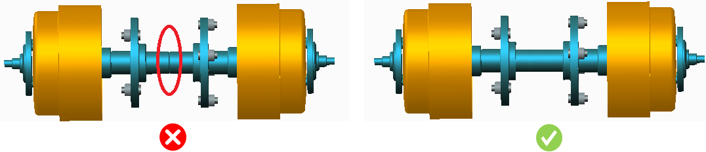

アセンブリにおいて、互いに接触する同一または類似材料のコンポーネントは、部品点数を削減するために一体化すべきです。これにより、アセンブリ全体の製造コスト削減に寄与します。
最終アセンブリにおける部品点数削減の可能性は、コンポーネント設計の段階で検討すべきです。これにより、全体の製造コストを低減できます。コスト差は、アセンブリにおける部品点数削減に伴う以下のような利点をもたらします。
部品取り扱いコスト、在庫コスト、購買コスト、梱包コストの削減
部品ごとの不具合発生の可能性が低減し、付加価値のない作業（NVA）のコストが削減されます。
また、組立工程の自動化がより容易かつ低コストで実現可能になります。

注記：
このルールは、アセンブリレベルの解析に適用されます。
このルールは、DFMPro 設定に基づき、トップレベルのアセンブリ部品に対して実行できます。